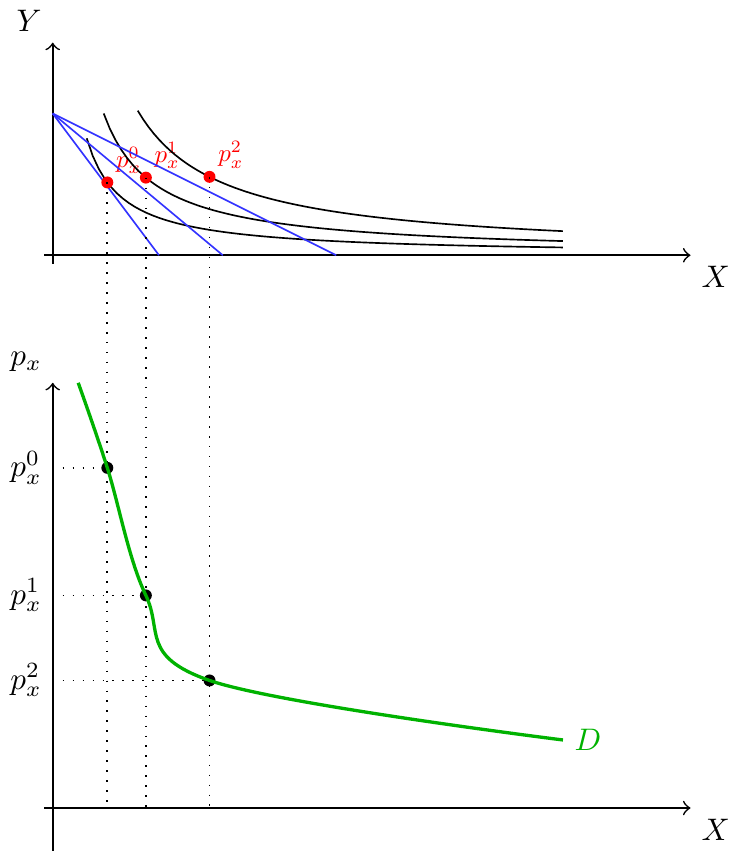

Microeconomia
Função de Utilidade, 2.ª Lei de Gossen, Procura Individual
Recapitulação 🔄
Na aula anterior:
- Cabaz de bens e espaço de consumo
- Restrição Orçamental: \(Xp_x + Yp_y = W\)
- Preferências: desejabilidade, completude, transitividade
- Curvas de indiferença: inclinação negativa, não se cruzam
Hoje: Função de utilidade, otimização e procura individual
Taxa Marginal de Substituição (TMS) 🔁
TMS — Definição
Taxa Marginal de Substituição
É a taxa à qual o consumidor está disposto a trocar um bem pelo outro ficando indiferente. Define-se como a quantidade de \(Y\) de que está disposto a prescindir para ter mais uma unidade de \(X\), mantendo a utilidade constante: \[TMS = \frac{\Delta Y}{\Delta X}\bigg|_{\Delta U = 0}\]
Ao longo da curva de indiferença convexa, \(|TMS|\) é decrescente — valorizamos mais o bem que temos em menor quantidade.
TMS — Gráfico

Função de Utilidade 📈
Função de Utilidade — Definição
Função de Utilidade
Representação numérica da relação de preferência: \[U(A) > U(B) \;\Leftrightarrow\; A \text{ é preferido a } B\] \[U(A) = U(B) \;\Leftrightarrow\; A \text{ é indiferente a } B\]
Função de Utilidade — Natureza Ordinal
A função de utilidade é uma relação ordinal — ordena cabazes, mas o valor por si só não tem significado cardinal.
Consequência: muitas funções utilidade expressam as mesmas preferências — basta preservar a ordenação.
Exemplo: \(A(20,20) \succ B(10,10)\) — todas estas funções descrevem as mesmas preferências: \[U = x^{0{,}5}y^{0{,}5}, \quad U = 10x^{0{,}5}y^{0{,}5}, \quad U = 0{,}5(\ln x + \ln y)\]
Curvas de Indiferença e Função Utilidade
Uma curva de indiferença é o conjunto de todos os cabazes com a mesma utilidade \(\bar{U}\):
\[\forall(x,y)\colon U(x,y) = \bar{U} \quad\Leftrightarrow\quad \Delta U = 0\]
Utilidade Marginal e Leis de Gossen 📉
Utilidade Total e Utilidade Marginal
- Utilidade total \(U(x)\): satisfação ao consumir uma quantidade de um bem.
- Utilidade marginal: utilidade fornecida por uma unidade adicional: \[Umg_x = \frac{\Delta U}{\Delta X} = U'_x\]
Utilidade Total vs. Utilidade Marginal

Aproximamo-nos do ponto de saciedade → \(Umg \to 0\)
1.ª Lei de Gossen
1.ª Lei de Gossen — Utilidade Marginal Decrescente
Uma unidade adicional de um bem tem uma utilidade adicional cada vez menor à medida que o consumo aumenta — a utilidade marginal é decrescente.
Preço de reserva: máximo que o consumidor está disposto a pagar por mais uma unidade. À medida que consome mais, a disponibilidade a pagar diminui.
TMS e Utilidade Marginal
Ao longo da curva de indiferença, \(\Delta U = 0\):
\[\Delta U = Umg_x \cdot \Delta X + Umg_y \cdot \Delta Y = 0\]
Isolando:
\[\boxed{TMS = \frac{\Delta Y}{\Delta X} = -\frac{Umg_x}{Umg_y}}\]
Escolha Óptima e 2.ª Lei de Gossen ⭐
Escolha Óptima do Consumidor
Escolha Óptima
É o ponto de consumo que maximiza a utilidade sujeito ao orçamento disponível: \[\max_{x,y} U(x,y) \quad \text{s.a.} \quad Xp_x + Yp_y = W\]
Escolha Óptima — Gráfico

2.ª Lei de Gossen
No ponto óptimo, o declive da RO iguala o declive da curva de indiferença:
\[-\frac{p_x}{p_y} = TMS = -\frac{Umg_x}{Umg_y}\]
2.ª Lei de Gossen
No óptimo do consumidor: \[\left|TMS\right| = \frac{p_x}{p_y} \quad\Leftrightarrow\quad \frac{Umg_x}{Umg_y} = \frac{p_x}{p_y}\]
2.ª Lei de Gossen — Interpretação
\[\frac{Umg_x}{Umg_y} = \frac{p_x}{p_y}\]
- Benefício marginal de mais \(X\): \(\dfrac{Umg_x}{Umg_y}\) — quanto de \(Y\) “vale” uma unidade de \(X\)
- Custo marginal de mais \(X\): \(\dfrac{p_x}{p_y}\) — quanto de \(Y\) “custa” uma unidade de \(X\)
- No óptimo: benefício marginal = custo marginal
Exemplo Resolvido — Escolha Óptima
Um consumidor tem €160, \(p_x = 20\)€ (camisas), \(p_y = 30\)€ (calças), \(U(x,y) = xy^3\).
Passo 1 — Calcular \(|TMS|\): \[Umg_x = y^3,\quad Umg_y = 3xy^2 \quad\Rightarrow\quad |TMS| = \frac{y}{3x}\]
Passo 2 — 2.ª Lei de Gossen: \[\frac{y}{3x} = \frac{20}{30} = \frac{2}{3} \quad\Rightarrow\quad y^* = 2x^*\]
Passo 3 — Substituir na RO: \[20x + 30(2x) = 160 \;\Rightarrow\; 80x = 160 \;\Rightarrow\; x^* = 2,\quad y^* = 4\]
Procura Individual 📉
Dedução da Procura Individual
Ao variar \(p_x\) com \(p_y\) e \(W\) constantes, cada preço dá um óptimo diferente.
O lugar geométrico dos óptimos é a Via Preço-Consumo.
Via Preço-Consumo e Curva de Procura

Exercícios ✏️
Exercício 1 (Escolha Múltipla)
Um consumidor tem \(U(x,y) = x \cdot y\), \(W = 100\)€, \(p_x = 5\)€, \(p_y = 4\)€. Qual a quantidade óptima de \(x\)?
(A) \(x^* = 5\) \(\quad\) (B) \(x^* = 10\) \(\quad\) (C) \(x^* = 20\) \(\quad\) (D) \(x^* = 8\)
Resposta: (B)
\(Umg_x = y\), \(Umg_y = x\). 2.ª Lei: \(\dfrac{y}{x} = \dfrac{5}{4} \Rightarrow y = \dfrac{5x}{4}\).
RO: \(5x + 4 \cdot \dfrac{5x}{4} = 10x = 100 \Rightarrow x^* = 10\).
Exercício 2 (Escolha Múltipla)
Qual das afirmações sobre a 1.ª Lei de Gossen é correcta?
(A) A utilidade total diminui à medida que se consome mais.
(B) A utilidade marginal é crescente com o consumo.
(C) A utilidade marginal é decrescente com o consumo.
(D) A utilidade marginal é constante.
Resposta: (C)
A 1.ª Lei de Gossen estabelece que cada unidade adicional acrescenta menos satisfação do que a anterior.
Exercício 3 (Desenvolvimento)
Um consumidor tem \(U(x,y) = x^2 y\), \(W = 90\)€, \(p_x = 3\)€, \(p_y = 2\)€.
a) Calcule \(Umg_x\) e \(Umg_y\).
b) Determine o cabaz óptimo \((x^*, y^*)\) pela 2.ª Lei de Gossen.
c) Calcule o nível de utilidade no óptimo.
Solução
a) \(Umg_x = 2xy\); \(\quad Umg_y = x^2\).
b) 2.ª Lei: \(\dfrac{2xy}{x^2} = \dfrac{2y}{x} = \dfrac{3}{2} \Rightarrow y = \dfrac{3x}{4}\).
RO: \(3x + 2 \cdot \dfrac{3x}{4} = 3x + \dfrac{3x}{2} = \dfrac{9x}{2} = 90 \Rightarrow x^* = 20,\quad y^* = 15\).
c) \(U(20,15) = 400 \times 15 = 6000\).

Microeconomia (Plano de Transição)